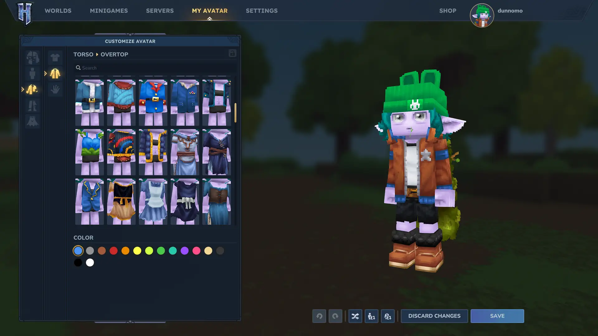
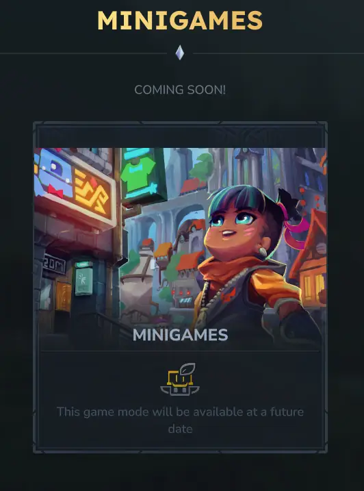
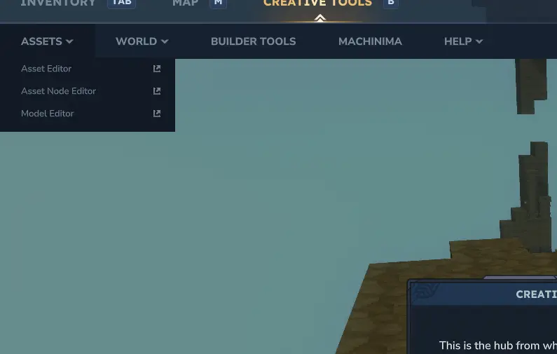

Hytale
Hytale has not officially released yet, as of writing. The game began development in 2015 and entered a state of early access January 13th, 2026. Even though this game is not yet released, it is included here because the early access is very well polished, the game comes from a great background, and the community is very supportive and active. Basically, the game has a great potential and is already fun.
- Released: N/A (EA release: 01/13/2026)
- Developed by: Hypixel Studios
- Published by: Hypixel Studios
- Made with: Java & C#
{kind=link}
Hytale is a game long awaited by many Minecraft players. To understand the story behind Hytale,
it might be best to start with understanding what Hypixel is. Hypixel is Minecraft's #1 online
server. It isn't affiliated with Minecraft officially, but at all times has over 15,000 players
online. (As of the time of writing this, there are 33,000+ currently online) It's a pretty big
deal compared to any other server. The server itself is a hub for many different mini-games,
building plots, and pvp-games. Fun fact: Hypixel started out showcasing and hosting adventure
maps where players go on a mini adventure and solve puzzles. The adventure maps are still
available to download, but aren't on the server anymore. Anyways, enough about Hypixel, let's
talk about their game.
Hytale has been in development since 2015 and has had quite an adventure in getting to where
it is today. The game was acquired by Riot Games in 2020 where it was rewritten in C++ as a
cross-platform game. After spending tons of time, effort, and money, Riot Games decided to
shut the project down. Dissapointing, but it's Riot Games, we're used to dissapointment from
these guys. In 2025 Hypixel Studios re-purchased their game to bring it back to life, starting
by reverting to the original Java/C#-based game engine. Shortly after the re-purchase, Hytale
was already in a state ready to release in early-access, and that it did. While the game
currently remains incomplete, there is plenty already implemented.

The game already includes: a very satisfying character customizer, a classic survival mode,
a creative mode for more in-depth building or content creation, enemies to fight, gear to craft
ores to mine, and a placeholder for a minigames mode. Players can play multiplayer with friends
already, too. There are plenty of online dedicated servers to check out if you don't want to
just play locally.

One of the coolest features, in my opinion, is the mods. The game includes tools to create assets
for the game and tries to make it as accessable as possible for anyone to start creating. Even
cooler than that, players can join your modded world without having to download a thing! It
works super seamlessly and is very exciting for players who like to load up their worlds with
mods, but don't want walk others through setting up their games the same way.

Players might want to choose Hytale over other games if they enjoy:
- Hypixel on Minecraft
- Games similar to Minecraft
- Creating content
- MODS!